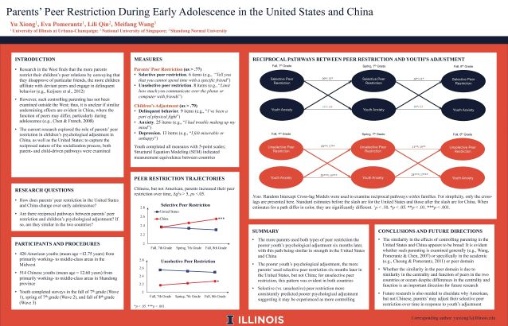
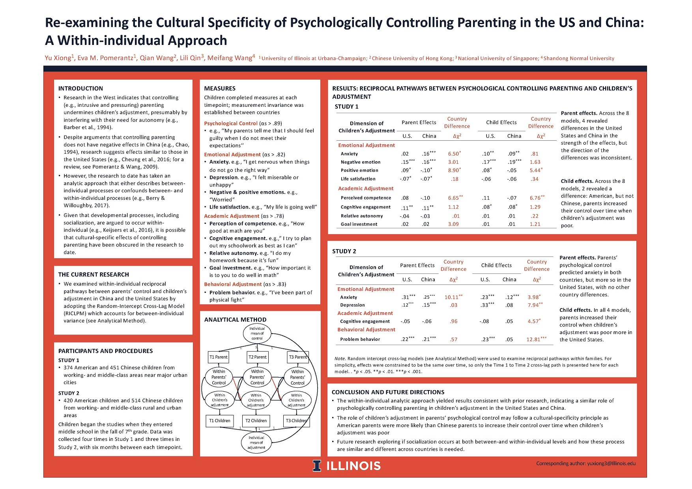

Publications
[SSCI Psychology: Developmental /Educational Q1]
Parents’ peer restriction in the United States and China: A longitudinal study of early adolescents
Xiong, Y., Qin, L., Wang, M., & Pomerantz, E. M. (2020). Parents’ peer restriction in the United States and China: A longitudinal study of early adolescents. Developmental Psychology, 56(9), 1760–1774. https://doi.org/10.1037/dev0001088
Quantify longitudinal changes using the latent growth model; Structural equation modeling with bi-directional effects over time
Reexamining the cultural specificity of controlling and autonomy-supportive parenting in the United States and China with a within-individual analytic approach
Xiong, Y., Qin, L., Wang, Q., Wang, M., & Pomerantz, E. M. (2022). Reexamining the cultural specificity of controlling and autonomy-supportive parenting in the United States and China with a within-individual analytic approach. Developmental Psychology, 58(5), 935–949. https://doi.org/10.1037/dev0001329
Multiple group comparison within structural equation modeling; Measurement invariance of survey questions across the United States and China
Implications of Chinese and American mothers’ goals for children’s emotional distress
Ng, J., Xiong, Y., Qu, Y., Cheung, C., Ng, F. F.-Y., Wang, M., & Pomerantz, E. M. (2019). Implications of Chinese and American mothers’ goals for children’s emotional distress. Developmental Psychology, 55(12), 2616–2629. https://doi.org/10.1037/dev0000834
Experiment design with multiple independent variables each with multiple levels; Intervention checks and mediation analysis
Identifying False Growth Mindsets in Adults and Implications for Mathematics Motivation
Barger, M. M., Xiong, Y., & Ferster, A. E. (2022). Identifying False Growth Mindsets in Adults and Implications for Mathematics Motivation. Contemporary Educational Psychology, 70,102079. https://doi.org/10.1016/j.cedpsych.2022.102079
Implement cluster analysis to identify subgroups holding different combinations of mindset ideas
Parents' responses to children's math performance in early elementary school: Links with parents' math beliefs and children's math adjustment.
Barger, M. M., Wu, J., Xiong, Y., Oh, D. D., Cimpian, A., & Pomerantz, E. M. (2022). Parents' responses to children's math performance in early elementary school: Links with parents' math beliefs and children's math adjustment. Child Development, 00, 1– 17. https://doi.org/10.1111/cdev.13834
Validate psychometric properties of a new measure (e.g., factor structure, concurrent and predictive validity, discriminative validity) using various statistic tools (e.g., linear regressions, cluster algorithm, cross-validation)